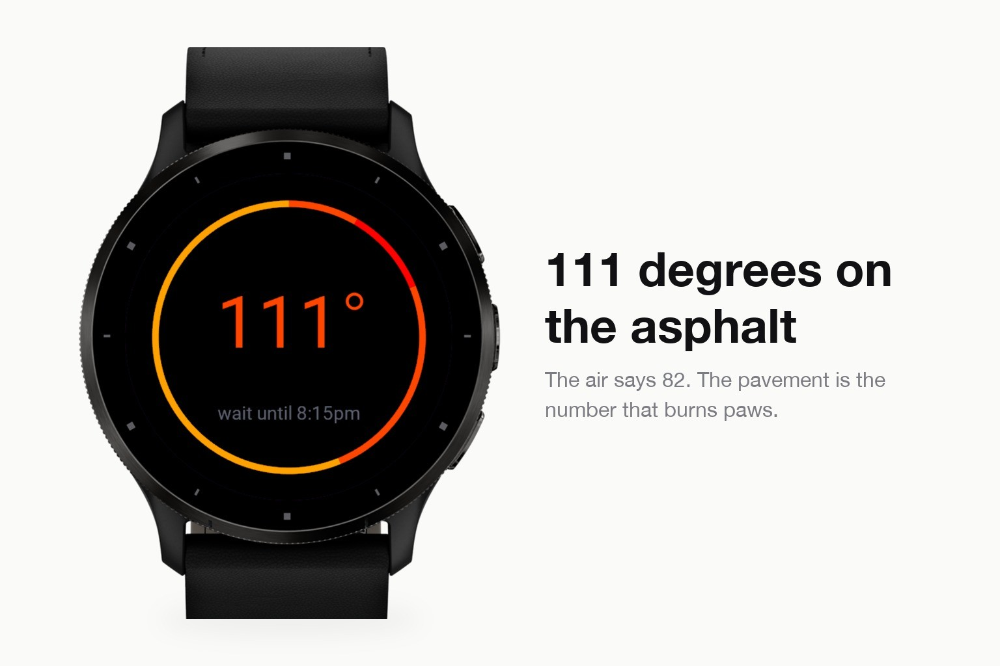
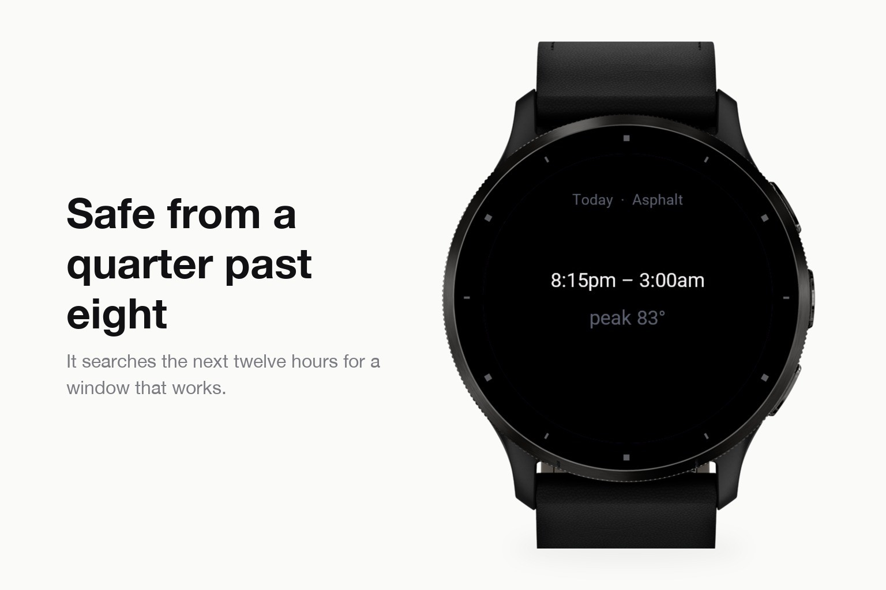
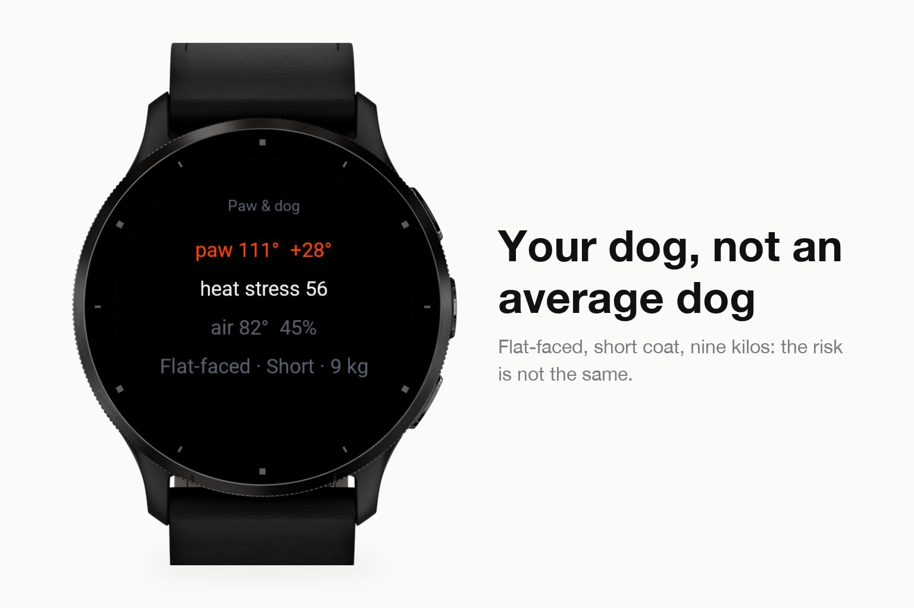

Everyday tools · Device app
Dog walk window from the real temperature under the paws.
Submitted to Garmin and awaiting review. The store page opens once it is approved.



Hot asphalt burns paws and nobody feels it through their shoes. Pawcast works out how hot the ground under your dog actually is right now, how long paws would last on it, and when the next safe window opens.
It is not a thermometer. It solves a radiation balance for the surface you are walking on - asphalt, concrete, grass or sand - with sun height computed for your own position, cloud cover from the forecast, and a time constant per surface, so it knows asphalt is still hot in the evening and colder than the air at night. On top of that comes a heat stress index for your dog's muzzle, coat, age and weight, and a cold side with wind chill, black ice and road salt.